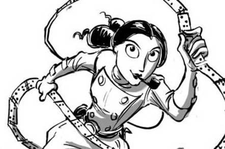
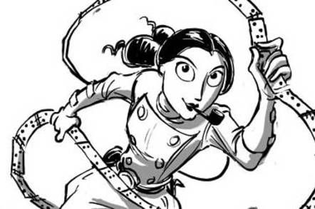

Ada Lovelace: A Primeira Programadora da História
Augusta Ada Byron King, Condessa de Lovelace (1815–1852), foi uma das figuras mais brilhantes e intrigantes da ciência no século XIX. Seu trabalho como matemática, escritora e colaboradora de Charles Babbage moldou o que hoje conhecemos como computação. Mas sua vida foi marcada não apenas por suas contribuições técnicas, mas também por desafios pessoais, intelectuais e sociais. Aqui está um retrato detalhado de sua trajetória, conquistas e legado.
Infância e Formação
Ada nasceu em 10 de dezembro de 1815, em Londres, Inglaterra. Ela era filha do famoso poeta romântico Lord Byron e de Anne Isabella Milbanke, uma mulher intelectualmente inclinada à matemática e à ciência. O casamento de seus pais foi curto: Lord Byron abandonou a família quando Ada tinha apenas um mês. Anne, decidida a evitar que Ada herdasse o temperamento instável do pai, investiu na formação racional da filha. Desde cedo, Ada foi instruída em matemática, lógica e ciências, algo incomum para mulheres na época. Professores renomados, como Augustus De Morgan e Mary Somerville, ajudaram a moldar seu intelecto. Apesar de sua formação privilegiada, Ada enfrentou desafios de saúde. Uma doença grave aos 14 anos deixou-a acamada por quase um ano, mas isso não diminuiu sua sede de conhecimento. Durante a recuperação, ela desenvolveu uma paixão pelo funcionamento de máquinas, algo que moldaria sua carreira.
Parceria com Charles Babbage
Aos 17 anos, Ada conheceu Charles Babbage, inventor e matemático conhecido como o "pai do computador". Babbage estava trabalhando em duas máquinas revolucionárias:
- Máquina Diferencial: Um dispositivo projetado para calcular tabelas matemáticas automaticamente.
- A Máquina Analítica: Um projeto ainda mais ambicioso, considerado o precursor do computador moderno.
Ada ficou fascinada pela Máquina Analítica, especialmente por sua complexidade e potencial. Babbage, por sua vez, reconheceu o talento de Ada, chamando-a de "Encantadora dos Números". Essa colaboração resultou em um dos trabalhos mais importantes da história da computação.
Personalidade e Filosofia
Ada era uma mulher de múltiplos interesses. Ela acreditava na união de ciência, arte e criatividade, chamando essa abordagem de "ciência poética". Seu interesse pela matemática era guiado por uma visão quase filosófica: para ela, os números e algoritmos poderiam revelar as leis fundamentais do universo. Apesar de sua genialidade, Ada tinha uma personalidade complexa. Era conhecida por sua confiança em suas ideias, mas também por sua autocrítica e dúvidas internas.
Desafios Pessoais e Finais de Vida
Ada casou-se em 1835 com William King, que mais tarde se tornaria o Conde de Lovelace. O casal teve três filhos, mas o casamento foi tumultuado. Ada também enfrentou dificuldades financeiras, envolvendo-se em apostas e investimentos mal-sucedidos. Sua saúde, que sempre fora frágil, deteriorou-se rapidamente nos últimos anos de sua vida. Em 27 de novembro de 1852, Ada morreu de câncer uterino, aos 36 anos. Foi enterrada ao lado de seu pai, Lord Byron, em Nottinghamshire, Inglaterra.
.png) 

Reconhecimento Póstumo
O trabalho de Ada permaneceu obscuro por décadas. Somente no século XX, com o avanço da ciência da computação, suas contribuições foram redescobertas e celebradas. Alguns marcos de reconhecimento incluem:
- A Linguagem de Programação ADA: Criada pelo Departamento de Defesa dos EUA nos anos 1980, essa linguagem foi nomeada em
sua homenagem. - Dia de Ada Lovelace: Comemorado anualmente na segunda terça-feira de outubro, celebra a inclusão de mulheres nas áreas
de ciência, tecnologia, engenharia e matemática (STEM). - Estudos Acadêmicos: Hoje, suas notas são consideradas uma das bases fundadoras da ciência da computação.
Legado
Ada Lovelace não foi apenas uma programadora; foi uma visionária que enxergou o potencial transformador da tecnologia em um mundo que ainda não estava preparado para suas ideias. Suas contribuições anteciparam a era digital e continuam a inspirar gerações de cientistas, engenheiros e inovadores. Sua vida é um testemunho de como curiosidade, imaginação e determinação podem superar as barreiras do tempo e moldar o futuro.